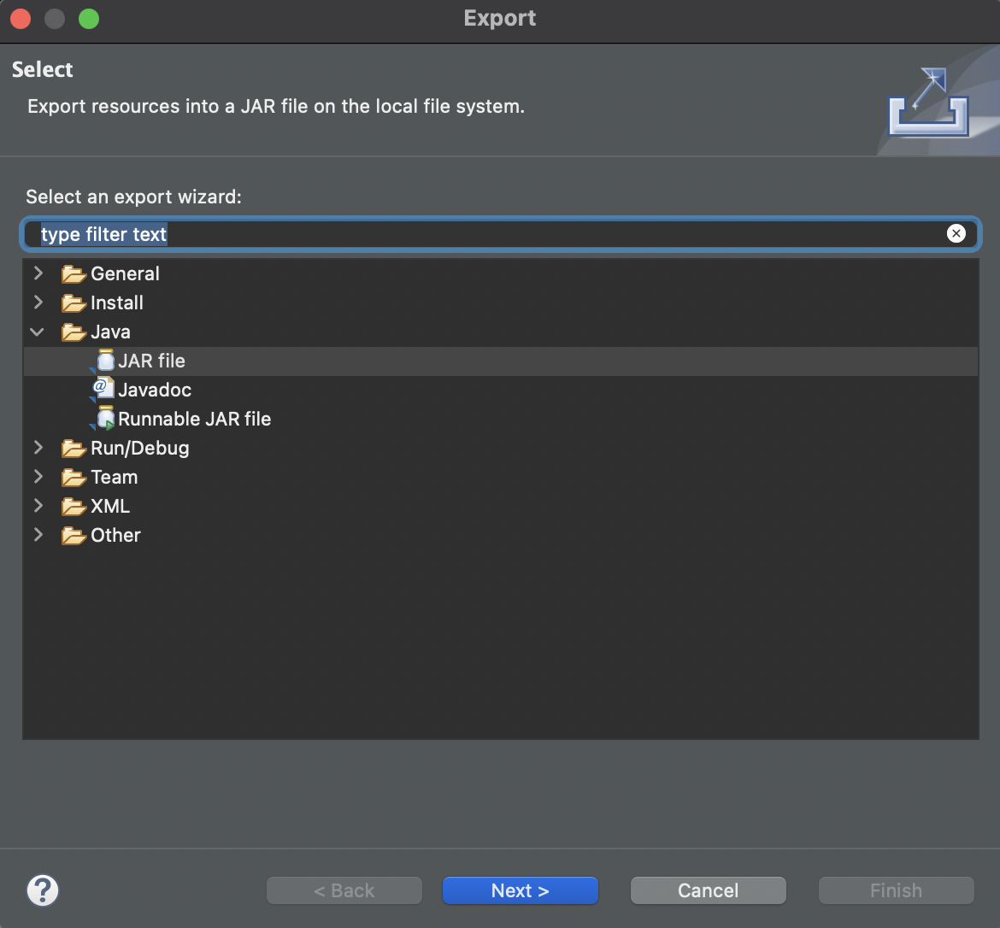
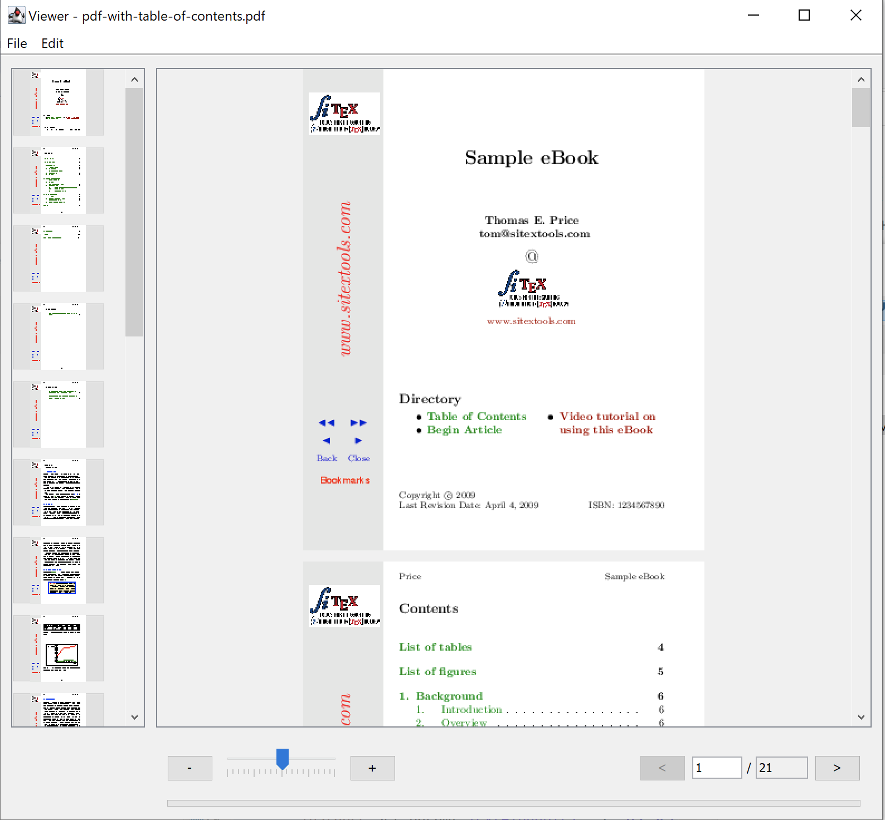

Java overview
About
In the GhostPDL repository sample Java projects can be found in /demos/java.
Within this location the following folders are of relevance:
Platform & setup
Building Ghostscript
Ghostscript should be built as a shared library for your platform.
See Building Ghostscript.
jni: Building the Java Native Interface
Before building the JNI ensure that Ghostscript has already been built for your platform and that you have JDK installed.
The JNI is for use in the Java interface,
this object must be placed somewhere on your Java PATH. On Windows, the DLL
can be placed in the working directory, next to gsjava.jar.
| Platform | JNI file |
|---|---|
| Windows | gs_jni.dll |
| MacOS | gs_jni.dylib |
| Linux / OpenBSD | gs_jni.so |
Preparing your include folder
The build scripts require the header jni.h, which defines
all JNI functions, and jni_md.h, which defines all system-specific
integer types. The build scripts expect an include folder relative to their location which contain these header files from your system.
These headers are typically found in the following directories:
| Platform | jni.h | jni_md.h |
|---|---|---|
| Windows | C:\Program Files\Java\<JDK Install>\include\jni.h |
C:\Program Files\Java\<JDK Install>\include\win32\jni_md.h |
| MacOS | /Library/Java/JavaVirtualMachines/<JDK Install>/Contents/Home/include/jni.h |
/Library/Java/JavaVirtualMachines/<JDK Install>/Contents/Home/include/darwin/jni_md.h |
| Linux | /lib/jvm/<JDK Install>/include/jni.h |
/lib/jvm/<JDK Install>/include/linux/jni_md.h |
Once your include folder has been located folder you can copy it and place it in your ghostpdl/demos/java/jni/gs_jni folder.
Your build scripts should now be ready to run as they will be able to find the required JNI header files in their own relative include folder.
Building on Windows
The jni folder contains a Visual Studio Solution file /jni/gs_jni/gs_jni.sln which you should use to build the required JNI gs_jni.dll library file.
With the project open in Visual Studio, select the required architecture from the drop down - then right click on 'gs_jni' in the solution explorer and choose "Build".
Building on MacOS
On your command line, navigate to ghostpdl/demos/java/jni/gs_jni and ensure that the build script is executable and then run it, with:
chmod +x build_darwin.sh
./build_darwin.shBuilding on Linux
On your command line, navigate to ghostpdl/demos/java/jni/gs_jni and ensure that the build script is executable and then run it, with:
chmod +x build_linux.sh
./build_linux.shgsjava: Building the JAR
Building with the command line
Navigate to ghostpdl/demos/java/gsjava and use the following:
| Platform | Run file |
|---|---|
| Windows | build_win32.bat |
| MacOS | build_darwin.sh |
| Linux | build_linux.sh |
NOTE
gsjavahas a dependancy on jni, please ensure thatgs_jniis able to be built beforehand.
Building with Eclipse
Alternatively you can use Eclipse to build the JAR file.
Using Eclipse import the source folder gsjava as a project and select Export > Java > JAR File as shown in the screenshot example below:

Linking the JAR
The built JAR should be properly linked within your project Java Build Path as follows:

Demo projects
gstest
This project can be opened in Eclipse and used to test the Ghostscript API. The sample here simply sets up an instance of Ghostscript and then sets and gets some parameters accordingly.
gsviewer
This project can be used to test the Ghostscript API alongside a UI which handles opening PostScript and PDF files. The sample application here allows for file browsing and Ghostscript file viewing.
Below is a screenshot of the sample application with a PDF open:

To run the project navigate to the demos/java/gsviewer location and ensure that the required libraries are in the directory:
| Platform | Ghostscript library file | JNI library file |
|---|---|---|
| Windows | gpdldll64.dll |
gs_jni.dll |
| MacOS | libgpdl.dylib |
gs_jni.dylib |
| Linux / OpenBSD | libgpdl.so (this may have been built as libgs.so, so it should be copied into this directory and renamed to libgpdl.so) |
gs_jni.so |
Building on Windows
Run the build_win32.bat script.
Running on Windows
To run, open gsviewer.jar either through File Explorer or in the command line through the following command:
java -jar gsviewer.jarBuilding on MacOS
On your command line, navigate to ghostpdl/demos/java/gsviewer and ensure that the build script is executable and then run it, with:
chmod +x build_darwin.sh
./build_darwin.shThis will automatically build gs_jni.dylib (in the ghostpdl/demos/java/jni/gs_jni/ location) and gsjava.jar gsviewer.jar in the gsviewer directory.
Running on MacOS
Ensure that the Ghostscript library exists in the gsviewer directory. (Copy and move the built library from ghostpdl/sobin as required).
Ensure that the run script is executable and then run it, with:
chmod +x start_darwin.sh
./start_darwin.shBuilding on Linux
On your command line, navigate to ghostpdl/demos/java/gsviewer and ensure that the build script is executable and then run it, with:
chmod +x build_linux.sh
./build_linux.shThis will automatically build gs_jni.so (in the ghostpdl/demos/java/jni/gs_jni/ location) and gsjava.jar gsviewer.jar in the gsviewer directory.
NOTE
On Linux, when using OpenJDK, the property "assistive_technologies" may need to be modified for the Java code to build. It can be modified by editing the "accessibility.properties" file. This is located at:
/etc/java-8-openjdk/accessibility.properties
Running on Linux
Ensure that the Ghostscript library exists in the gsviewer directory. (Copy and move the built library from ghostpdl/sobin as required).
Ensure that the run script is executable and then run it, with:
chmod +x start_linux.sh
./start_linux.sh